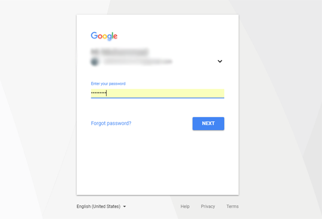
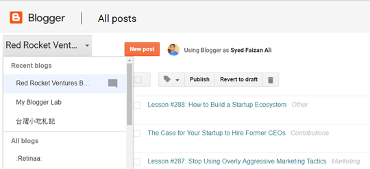
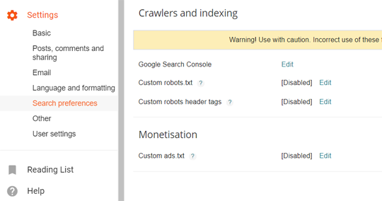
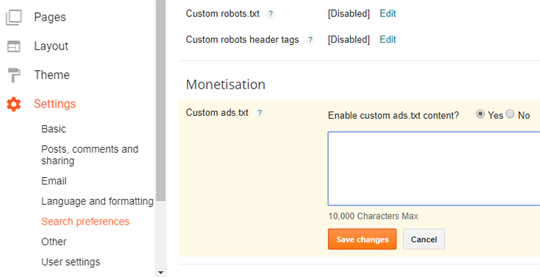
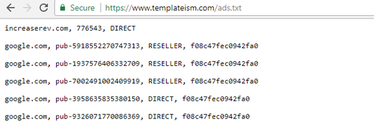

Cara Menambahkan File Ads.txt Custom Di Blogspot/Blogger
Bagi hampir semua blogger, iklan merupakan sumber pendapatan utama. Seperti kita semua ketahui, jika anda membuat blog menggunakan platform Blogger.com, anda dapat menempatkan iklan dari berbagai perusahaan periklanan di blog Anda. Tapi ternyata mendapatkan uang dari internet lewat blogging tidak semudah yang kita semua bayangkan. Anda sebagai blogger juga harus dapat memeriksa keaslian iklan yang ditampilkan dalam blog anda. Bagaimana caranya? Dengan meng-upload file Ads.txt. File ini nantinya akan mengamankan blog anda dari iklan-iklan yang berisi penipuan maupun virus berbahaya atau juga untuk menghindari iklan yang tidak seharusnya muncul di blog anda.
Apa itu file ads.txt?
File “Ads.txt” berisi daftar advertiser yang diperbolehkan oleh pemilik situs web sehingga hanya mereka yang dapat menampilkan iklan di situs web Anda. Gagasan di balik penggunaan file ads.txt adalah untuk menghindari iklan yang berisi penipuan dan penempatan iklan palsu dari sumber yang tidak dikenal. File Ads.txt bertujuan untuk membantu calon pengiklan untuk memilih blog yang berkualitas dalam menerbitkan iklan yang juga berkualitas.
Mengapa Harus Menggunakan File Custom ads.txt?
File ini akan membantu pasar iklan digital dari pengiklan yang memiliki tujuan jahat (dengan membeli slot berkualitas rendah, lalu menerbitkan iklan penipuan di situs yang memiliki konten premium). Misalnya, seorang advertiser jahat dapat membeli slot iklan bernilai rendah di situs web berkualitas rendah lalu kemudian mempostingnya di situs konten premium seperti bbc.com. Cara seperti ini menjadi peluang yang sangat menggiurkan untuk para penipu untuk menjual ruang iklan digital palsu di internet. Tujuan awalnya memang terkesan hanya berpihak terhadap situs besar, namun tidak menutup kemungkinan blog anda juga dapat terbantu dengan adanya file ini. Simak tutorial dibawah ini untuk menambahkan file ads.txt di blogspot anda.
Cara Menambahkan File Ads.txt Custom di Blogspot
Langkah 1 Masuk Ke Dalam Akun Blogger Anda
Hal pertama yang perlu Anda lakukan adalah menambahkan file ads.txt di blog Anda adalah masuk ke akun Blogger Anda. Proses masuk mengharuskan Anda memasukkan akun Gmail dan kata sandi

Langkah 2 Pilih Blog Yang Anda Inginkan
Jika Anda memiliki lebih dari satu blog, maka pilih yang mana Anda ingin menambahkan file ads.txt seperti yang ditunjukkan pada tangkapan layar di bawah ini:

Langkah 3 Klik Menu Setting > Search Preferences
Pada langkah ketiga, setelah memilih blog, Anda harus pergi ke preferensi pencarian di bawah pengaturan seperti yang ditunjukkan pada gambar di bawah:

Langkah 4 Klik Menu Monetization
Sekarang dalam monetisasi, Anda akan menemukan opsi untuk mengaktifkan file ads.txt khusus untuk blog Anda. Cukup klik edit dan kemudian pilih opsi ya untuk mengaktifkan konten ads.txt khusus seperti yang ditunjukkan pada tangkapan layar di bawah ini.

Setelah mengaktifkan file ads.txt Anda, sebuah kotak teks akan muncul, salin pengaturan ads.txt dari platform monetisasi pihak ketiga Anda dan tempel ke dalam kotak teks untuk menautkan monetizer iklan Anda dengan blogger.

Setelah semuanya selesai, klik simpan perubahan. Itu saja file ads.txt Anda sekarang langsung di blog Anda. Anda dapat mengunjungi file ads.txt dengan mengunjungi www.domainbloganda.com/ads.txt. Catatan: Jangan lupa mengganti domainbloganda.com dengan nama domain Anda.
Jika Anda telah mengikuti instruksi kami dengan seksama, Anda akan dapat melihat akun pengiklan Anda atau informasi yang Anda tambahkan dalam file ads.txt Anda, mirip dengan yang ditunjukkan pada tangkapan layar di bawah ini.
Kami berharap tutorial ini bermanfaat bagi Anda dalam mempelajari cara menambahkan file ads.txt di blogger Blogspot. Beri tahu kami apa kesan Anda tentang menambahkan file ads.txt di blog Anda.
Tagar: